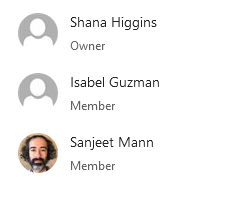
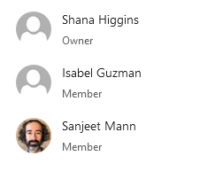

What is in Office 365, and is it useful?
Part 1: Project management
Sanjeet Mann
Systems & Discovery Librarian
California State University, San Bernardino
What is Office 365?
Software 
Files

People

Sanjeet Mann
Systems & Discovery Librarian
California State University, San Bernardino
Software
Files
People
